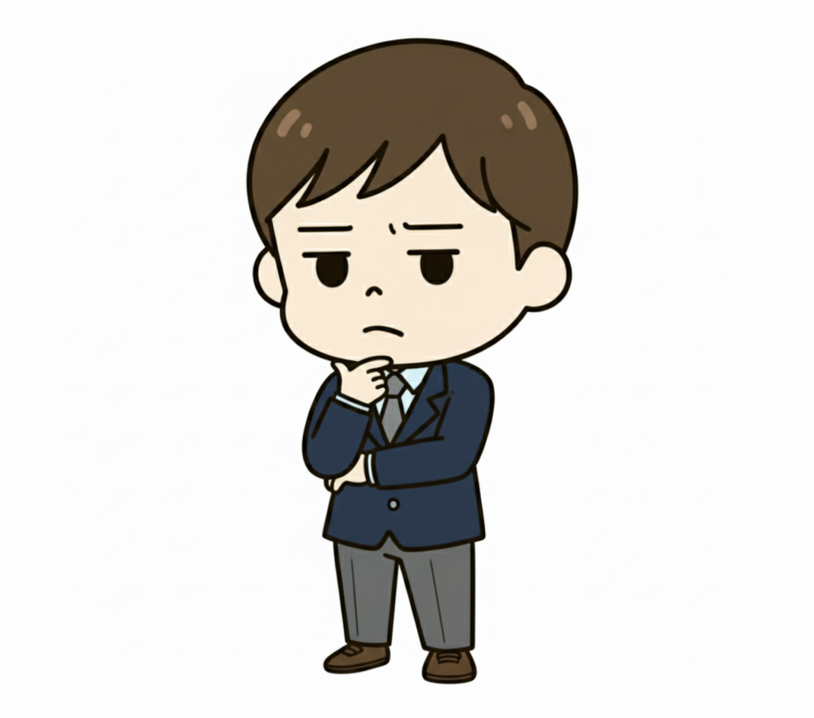

CLMS - 疑問を解明する探偵タイプ
「謎はすべて解けた。」あらゆる物事の根源を、論理的に解明しようとする解読者
１．基本性格
あなたは、あらゆる物事を「解明すべき謎」として捉える、知的な探偵です。公式や年号をただ暗記するのではなく、「なぜ、そうなるんだろう？」という純粋な好奇心から、その物事の根源や仕組みを論理的に解き明かすことに喜びを感じます。一人で図書室や資料室にこもり、黙々と手がかり（情報）を集めることを好み、どうしても分からない謎にぶつかった時は、専門家である先生に的確な質問をしてヒントを得ます。あなたにとって学びとは、真実にたどり着くためのスリリングな捜査なのです。
２．あなたの強み
最大の武器は、一つの物事を徹底的に掘り下げ、その本質を完全に見抜く、その驚異的な探求力と集中力です。あなたは、誰もが諦めてしまうような難問に対しても、粘り強く思考を続け、必ず論理的な答えにたどり着きます。その深い理解力は、付け焼き刃の知識とは一線を画し、応用問題などで絶大な力を発揮します。また、あなたの投げる鋭い質問は、時としてクラス全体や先生自身にも新しい発見をもたらします。
３．あなたの弱み
一つの謎に集中するあまり、周りが見えなくなりがちです。興味のある一つの問題に時間をかけすぎて、他の教科の勉強がおろそかになってしまうことも。また、グループワークでは、他のメンバーの調査や分析を「信じられない」と感じ、結局すべての作業を一人で抱え込んでしまう傾向があります。論理的な正しさを何よりも重視するため、仲間が出した少し非論理的だが面白いアイデアを、無意識に切り捨ててしまうことがあるかもしれません。
４．ワンポイントアドバイス
あなたの探求力は、真の知性を育む素晴らしい才能です。その力をさらに活かすために、「時間内に事件を解決する」という意識をプラスしてみましょう。面白い謎でも、制限時間を設けることで、効率的に思考する訓練になります。また、グループワークでは、自分を「探偵事務所の所長」だと考えてみましょう。あなたは捜査の指揮を執り、信頼できる仲間に「聞き込み」「資料集め」といった役割を任せるのです。チームで謎を解く楽しさが、きっとあなたをさらに成長させてくれます。
５．他のタイプとの相性
🤝 【響き合う二人】
CIMT学校行事の企画者
✨ 【鏡合わせの二人】
CLRS静かに思考する哲学者
🌗 【光と影の二人】
AIRTチームを鼓舞する応援団長
💧 【水と油の二人】
ALMT信頼される生徒会長